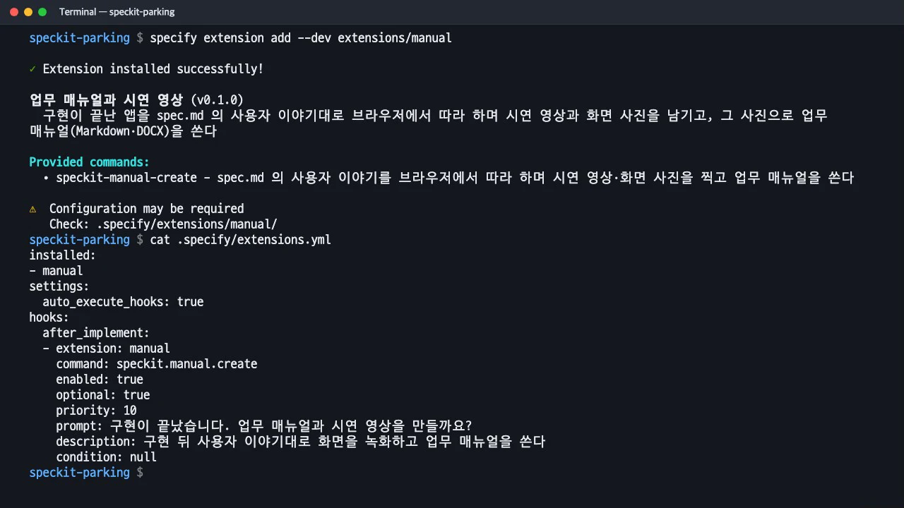
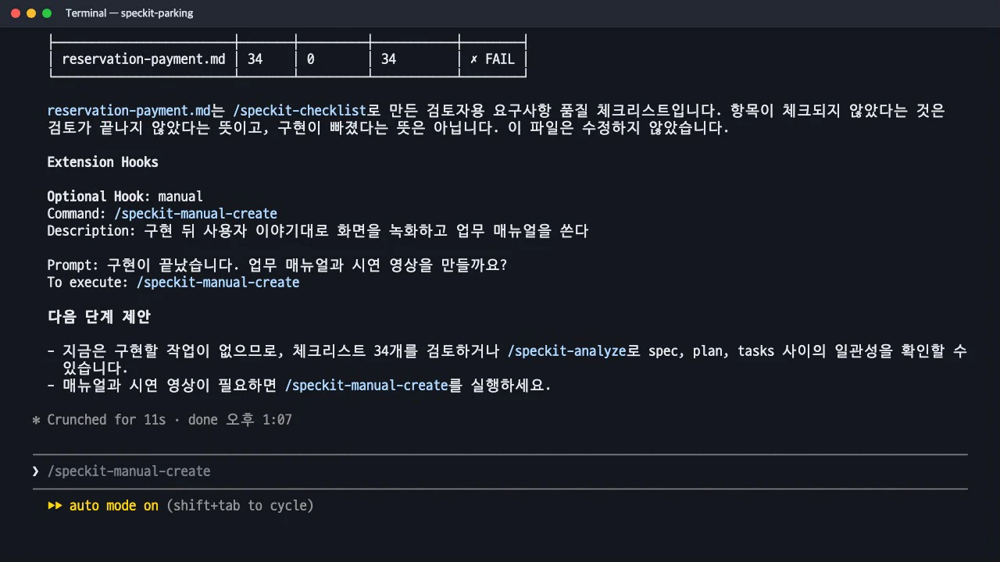
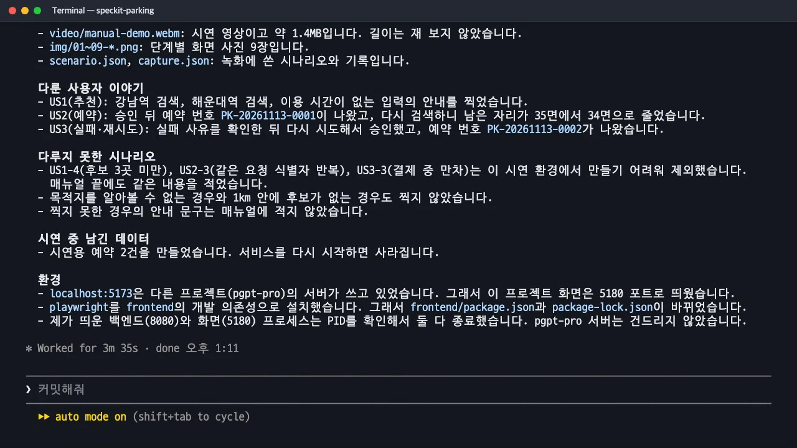
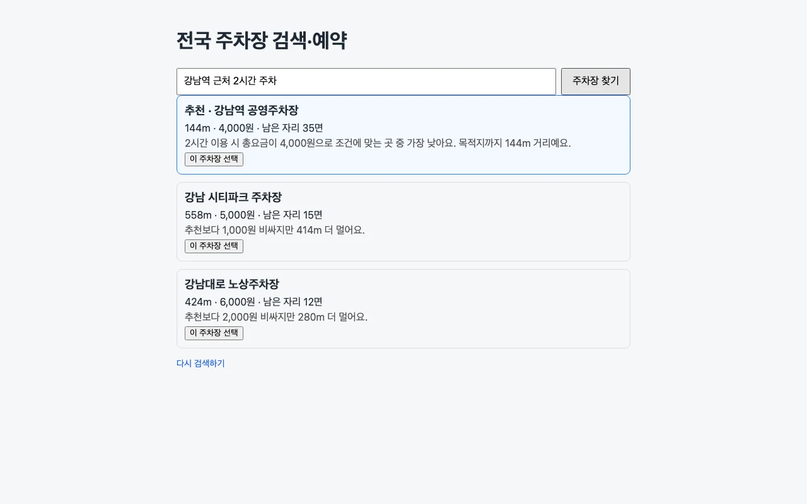
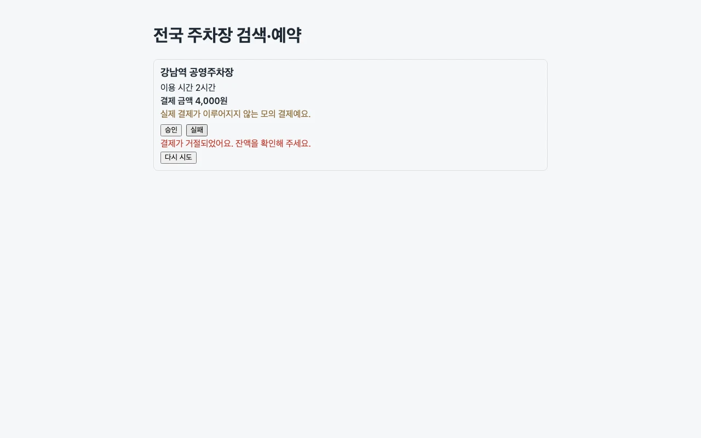

Spec Kit은 확장(extension)으로 명령과 훅을 추가할 수 있습니다. 구현이 끝나면 사양의 사용자 이야기대로 브라우저를 움직여 시연 영상과 화면 사진을 남기고, 그 사진으로 업무 매뉴얼을 만드는 확장을 직접 만들어
after_implement훅에 연결해 봅니다.
이 장의 산출물 · GitHub
이 장의 완성 파일은 공개 저장소 uengine-oss/tutorial-speckit-handson의 태그 step-12-extension에 있습니다. 본문의 파일 이름을 눌러도 해당 파일이 열립니다.
무엇을 · 왜#
앱을 다 만들면 사용자를 위한 업무 매뉴얼이 필요합니다. 보통은 사람이 화면을 하나씩 캡처해 따로 만듭니다. Spec Kit 프로젝트의 사양에는 이미 누가 무엇을 하는지가 적혀 있습니다. 사용자 이야기와 인수 시나리오대로 화면을 찍으면 매뉴얼의 뼈대가 됩니다.
Spec Kit 1.4에서는 이런 기능을 확장으로 추가할 수 있습니다. 확장은 폴더 하나로 구성합니다.
| 파일 | 하는 일 |
|---|---|
extension.yml |
확장의 이름과 버전, 제공하는 명령(provides.commands), 연결할 훅(hooks) |
commands/speckit.manual.create.md |
에이전트가 따를 지시서. 설치하면 Claude Code 스킬 /speckit-manual-create가 됩니다 |
scripts/node/capture.mjs |
시나리오 JSON대로 브라우저를 움직이며 영상과 사진을 남기는 도구 |
훅 이름은 before_나 after_ 뒤에 핵심 명령 이름을 붙입니다(after_implement, before_plan 등). 핵심 스킬은 끝날 때마다 .specify/extensions.yml을 읽어 등록된 훅을 처리합니다. optional: true이면 실행할 명령을 제안만하고, optional: false이면 바로 실행합니다. Spec Kit에 함께 들어 있는 git 확장도 같은 방식으로 단계마다 커밋하는 훅을 연결합니다.
판단이 필요한 일과 매번 똑같이 해야 하는 일을 나눴습니다. 촬영할 화면과 순서, 캡션과 매뉴얼 문장은 에이전트가 사양을 읽고 정합니다. 브라우저를 움직이고 녹화하는 일은 스크립트가 맡습니다.
따라 하기#
- 확장 폴더를 만듭니다. 실습 폴더 안
extensions/manual/에 세 파일을 둡니다. 핵심은extension.yml의 명령과 훅입니다.지시서에는 순서(문서 읽기 → 앱 띄우기 → 시나리오 쓰기 → 녹화 → 사진 확인 → 매뉴얼 쓰기 → DOCX → 정리)와 지킬 사항(앱 소스와 사양은 고치지 않는다, 띄운 프로세스만 끈다, 화면에 실제로 보인 것만 쓴다)을 적었습니다.provides: commands: - name: speckit.manual.create file: commands/speckit.manual.create.md hooks: after_implement: command: speckit.manual.create optional: true prompt: "구현이 끝났습니다. 업무 매뉴얼과 시연 영상을 만들까요?" - 설치합니다. 로컬 폴더는
--dev로 설치합니다. 명령speckit-manual-create가 생기고,.specify/extensions.yml에 훅이 등록됩니다.specify extension add --dev extensions/manual cat .specify/extensions.yml
설치 뒤 .specify/extensions.yml 에 등록된 after_implement 훅 - 구현을 실행하면 훅이 제안합니다. 남은 작업이 없는 상태에서
/speckit-implement를 실행했습니다. 구현 스킬은 할 일이 없다고 보고한 뒤 「Extension Hooks」 아래에 「Optional Hook: manual」과 실행할 명령을 보여 줬습니다. 선택형 훅이라 자동 실행하지 않습니다.
구현이 끝나자 훅이 /speckit-manual-create 실행을 제안합니다 - 제안된 명령을 실행합니다.
/speckit-manual-create를 입력하자 Claude가spec.md와quickstart.md를 읽고docs/manual/scenario.json을 쓴 뒤 녹화했습니다. 첫 녹화는 오류 안내를 기다리는 선택자가 잘못되어 15초 만에 실패했고, Claude가capture.json의 실패 기록을 읽고 선택자를 고쳐 다시 녹화했습니다. 총 3분 35초가 걸렸습니다.
완료 보고: 만든 파일, 다룬 사용자 이야기, 다루지 못한 시나리오, 시연 중 남긴 데이터
산출물: 업무 매뉴얼#
docs/manual/ 아래에 업무매뉴얼.md와 업무매뉴얼.docx(pandoc 변환), 화면 사진 9장, 45초짜리 시연 영상 video/manual-demo.webm이 생겼습니다.
사용자 이야기마다 매뉴얼 한 절을 구성합니다. 「언제 쓰나요?」에 사용자 이야기의 목적을 적고, 번호를 매긴 단계 사이에 사진을 넣었습니다. 코드나 API 이름 없이 업무 담당자가 이해할 말로 썼습니다.
## 1. 한 문장으로 주차장 추천받기
**언제 쓰나요?** 어디에 주차할지 정하고 싶을 때 씁니다.
1. 처음 화면의 입력 칸에 목적지와 이용 시간을 한 문장으로 입력합니다. 예: `강남역 근처 2시간 주차`
2. **주차장 찾기** 버튼을 누릅니다.
3. 추천 1곳(맨 위, 파란 테두리)과 비교 후보 2곳이 나옵니다. … 남은 자리 수, 선정 이유가 함께 보입니다.


맨 끝의 「근거」 표에는 절마다 어느 사용자 이야기와 인수 시나리오, FR을 다뤘는지 적었습니다. 시연 환경에서 만들기 어려운 시나리오 셋(후보 3곳 미만, 같은 요청 반복, 결제 중 만차)은 미시연으로 따로 적었고, 화면에서 확인하지 못한 안내 문구는 매뉴얼에 쓰지 않았습니다. 지시서의 「화면에 실제로 나온 것만 쓴다」가 그대로 지켜진 결과입니다.
완료 보고에는 실행 환경도 설명했습니다. 5173 포트를 다른 프로젝트가 쓰고 있어 화면을 5180으로 띄웠고, playwright를 화면 폴더의 개발 의존성으로 설치했으며, 직접 띄운 백엔드와 화면 프로세스만 PID로 찾아 종료했다고 적었습니다. 시연 중 만든 예약 2건은 서비스를 다시 시작하면 사라진다고도 밝혔습니다.
확장을 만들 때
- 수정 범위를 좁히세요. 이 확장은
docs/manual/과 개발 의존성만 바꿉니다. 앱이 사양대로 동작하지 않으면 고치지 말고 멈춰서 보고하게 했습니다. - 선택형 훅부터 시작하세요. 영상과 매뉴얼은 매번 필요하지 않습니다. 제안만 하는
optional: true로 두고, 팀에서 늘 쓰게 되면optional: false로 바꿉니다. - 확장은 저장소에 함께 둡니다.
extensions/manual/을 저장소에 넣어 두면 팀원 누구나specify extension add --dev로 같은 단계를 이용합니다.
확인 문제#
선택형 훅(`optional: true`)과 필수 훅(`optional: false`)은 어떻게 다르게 동작하나요?
선택형 훅은 핵심 명령이 끝난 뒤 「Optional Hook」 아래에 설명과 실행할 명령만 보여 주고, 실행 여부는 사람이 정합니다. 이 실습에서도 /speckit-implement는 제안만 했고 /speckit-manual-create는 직접 입력했습니다. 필수 훅은 「Automatic Hook」으로 표시하고 그 자리에서 바로 실행합니다.
매뉴얼에 넣을 화면 순서는 누가, 무엇을 보고 정하나요?
에이전트가 spec.md의 사용자 이야기(우선순위 순)와 인수 시나리오를 읽고 docs/manual/scenario.json으로 정합니다. 입력 문구도 시나리오의 예시를 그대로 씁니다. 선택자는 추측하지 않고 화면 소스의 data-testid를 확인하게 했습니다. 브라우저를 움직이고 녹화하는 일은 매번 같은 스크립트 capture.mjs가 맡습니다.
사양에는 있는데 시연에서 찍지 못한 동작은 매뉴얼에 어떻게 남나요?
「미시연」으로 따로 적고, 화면에서 확인하지 못한 안내 문구는 쓰지 않습니다. 이 실습에서는 후보 3곳 미만, 같은 요청 반복, 결제 중 만차가 해당했습니다. 매뉴얼은 사양이 아니라 실제로 본 화면의 기록이기 때문입니다.